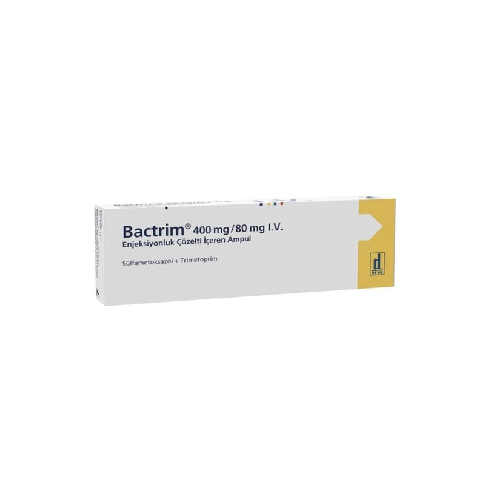

Bactrim 400 mg/80 mg I.V. Enjeksiyonluk Çözelti İçeren AMPUL,1 Adet

Ne için kullanılır
KT · Bölüm 1BACTRİM 5 ml’lik ampul olarak sunulmaktadır. Renksiz, gözle görünür partikül içermeyen berrak çözeltidir. BACTRİM etkin madde olarak trimetoprim ve sülfametoksazol içerir. BACTRİM, bakterileri öldürerek etki eden antibakteriyel bir ilaç türüdür.
BACTRİM; • Pneumocystis jiroveci (P.carinii)’nin neden olduğu akciğer enfeksiyonlarını tedavi etmek veya önlemek için • Toksoplazmozis’i (az pişmiş et veya kedi dışkısı ile geçer) tedavi etmek veya önlemek için • Nokardiozis’i (apselere neden olan bakteriyel enfeksiyon) tedavi etmek için • Akut komplikasyonsuz üriner sistem (idrar yolu) enfeksiyonlarını (örn. sistit) tedavi etmek için
• Orta kulak iltihabını (akut otitis media) tedavi etmek için • Uzun süreli bronşitin (bronş iltihabı) kötüleşmesini tedavi etmek için kullanılır.
BACTRİM ampul genellikle, ağızdan ilaç alamayanlarda damar içi yolla kullanılır.
Antibakteriyel ajanların uygun kullanımı ile ilgili resmi kılavuzlar göz önüne alınmalıdır.
BACTRİM çocuklar (6 haftalık ve üzeri) ve erişkinlerin tedavisinde endikedir.